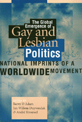

<body bgcolor="#FFFFFF" text="#000000" link="#0000FF" vlink="#CC0000" alink="#CC0000"><center><hr width="350" size="1" align="center" noshade>Rich accounts of gay and lesbian groups on five continents<hr width="350" size="1" align="center" noshade><p><a href="https://cdcshoppingcart.uchicago.edu/Cart/ChicagoBook.aspx?ISBN=9781566396448&&PRESS=temple" target="_top">Buy this book!</a> | <a href="https://cdcshoppingcart.uchicago.edu/Cart/Cart.aspx?PRESS=temple" target="_top">View Cart</a> | <a href="https://cdcshoppingcart.uchicago.edu/Cart/Cart.aspx?PRESS=temple" target="_top">Check Out</a></p><p></p></center><!--none//--><h1>The Global Emergence of Gay and Lesbian Politics</h1>
<H2>National Imprints of a Worldwide Movement</H2>
<H2><!-- [No period after Adam's middle initial] --></H2>
<h3>edited by Barry D Adam, Jan Willem Duyvendak and André Krouwel</h3>
<P>cloth 1-56639-644-1 $74.50, Nov 98, <FONT COLOR=#990033>Out of Stock Unavailable</FONT>
<br>paper 1-56639-645-X $36.95, Nov 98, <FONT COLOR=#990033>Available</FONT>
<br>Electronic Book 1-43990-153-8 $36.95 <FONT COLOR=#990033>Out of Stock Unavailable</FONT>
<BR> 448 pp
6x9
4&nbsp;tables 1&nbsp;figure
</P><BLOCKQUOTE><I>"This book fills a self-evident gap in the social and political literature on sexual identity movements."</I>
<br>&#151<b>Robert W. Bailey</b>, Rutgers University<I></I></BLOCKQUOTE>
<p>Since the Stonewall rebellion in 1969, gay and lesbian movements have grown from small outposts in a few major cities to a worldwide mobilization. This book brings together stories of the emergence and growth of movements in more than a dozen nations on five continents, with a comparative look that offers insights for both activists and those who study social movements.
<p>Lesbian and gay groups have existed for more than a century, often struggling against enormous odds. In the middle of the twentieth century, movement organizations were suppressed or swept away by fascism, Stalinism, and McCarthyism. Refounded by a few pioneers in the postwar period, movements have risen again as more and more people have stood up for their right to love and live with persons of their choice.
<p>This book addresses both the mature movements of the European Union, North America, and Australia and the newer movements emerging in Latin America, Eastern Europe, and parts of Asia and Africa, examining the social and political conditions that shape movement opportunities and trajectories. It is rich in the details of gay and lesbian cultural and political life in different countries.
<BR>&nbsp;<h2>Excerpt</h2><P>Excerpt available at <a href="http://www.temple.edu/tempress">www.temple.edu/tempress</a></p>
<BR>&nbsp;<h2>Reviews</h2>
<p><I>"The last twenty-five years have seen a creative and original theorizing from sociologists and political scientists about social movements and collective political behavior. In the pages of this book these two intellectual worlds finally meet, and our understanding of politics and social change is the wiser because of it. It deserves wide readership."</I>
<br>&#151<b>John D'Emilio</b>, author of <I>Sexual Politics, Sexual Communities</I>
<p>Read a <a href="../authors/1392_review.pdf">review</a> from <I>The Journal of Homosexuality</I>, Volume 42.4 (2002), written by Gerard Sullivan (pdf).
<p><i>"This important collection explores the origins and development of lesbian and gay movements across a range of countries, from north to south, including Canada, the U.S., select European countries, select Latin American countries, Japan, Australia, and southern Africa."</i>
<br>&#151<b><i><a href="http://www.cjsonline.ca/reviews/glpolitics.html" target="new">Canadian Journal of Sociology Online</a></i></b>
<p>Read a <a href="../authors/1392_review3.pdf">review</a> from <I>Contemporary Sociology</I>, Volume 28.5 (September 1999), written by David John Frank (pdf).
<p><i>"...a necessary reminder that many of our queer white male compatriots have a long way to go before they really 'get' what feminists and people of color have been saying about power and difference. For this is a book about power and sameness among queers, and differences get sacrificed to the author's pursuit of what is specifically and universally queer (or, rather, specifically and universally lesbian and gay)."</i>
<br>&#151<b>Contemporary Women's Issues Database</b>
<BR>&nbsp;<P><p>Visit Jan Willem Duyvendak's website: <a href="http://www.jwduyvendak.nl/" target="new">www.jwduyvendak.nl</a>.</P><BR>&nbsp;<br>
<h2>Contents</h2><P>
<p>1. Introduction &#150 the Editors
<br>2. Moral Regulation and the Disintegrating Canadian State &#150 Barry D Adam
<br>3. Gay and Lesbian Movements in the United States: Dilemmas of Identity, Diversity, and Political Strategy &#150 Steven Epstein
<br>4. "More Love and More Desire": The Building of a Brazilian Movement &#150 James N. Green
<br>5. Democracy and Sexual Difference: The Lesbian and Gay Movement in Argentina &#150 Stephen Brown
<br>6. The Lesbian and Gay Movement in Britain: Schisms, Solidarities and Social Worlds &#150 Ken Plummer
<br>7. The Dutch Lesbian and Gay Movement: The Politics of Accommodation &#150 Judith Schuyf and André Krouwell
<br>8. Gay and Lesbian Activism in France: Between Integration and Community-Oriented Movements &#150 Olivier Fillieule and Jan Willem Duyvendak
<br>9. Passion for Life: A History of the Lesbian and Gay Movement in Spain &#150 Ricardo Llamas and Fefa Vila, Translated from the Spanish by Stephen Brown
<br>10. Gay and Lesbian Movements in Eastern Europe: Romania, Hungary, and the Czech Republic &#150 Scott Long
<br>11. Emerging Visibility of Gays and Lesbians in Southern Africa: Contrasting Contexts &#150 Mai Palmberg
<br>12. Japan: Finding Its Way &#150 Wim Lunsing
<br>13. The Largest Street Party in the World: The Gay and Lesbian Movement in Australia &#150 Geoffrey Woolcock and Dennis Altman
<br>14. Gay and Lesbian Movements Beyond Borders? National Imprints of a Worldwide Movement &#150 the Editors
<br>About the Contributors
<br>Index
</P><BR>&nbsp;<H2>About the Author(s)</H2>
<table><tr><td valign="top"><img src="/tempress/authors/1392_au1.gif" height="90" width="75"></td><td width="100%" valign="middle"><p><B>Barry D Adam</B>, Professor of Sociology, University of Windsor, is the author of <I>The Rise of a Gay and Lesbian Movement</I> and <I>Experiencing HIV</I> (with Alan Sears).</P></td></tr></table><table><tr><td valign="top"><img src="/tempress/authors/1392_au2.gif" height="90" width="75"></td><td width="100%" valign="middle"><p><b>Jan Willem Duyvendak</b>, Professor of Community Development, Erasmus University of Rotterdam, has published two books on the new social movements and one on the gay movement.</P></td></tr></table><table><tr><td valign="top"><img src="/tempress/authors/1392_au3.gif" height="90" width="75"></td><td width="100%" valign="middle"><p><b>André Krouwel</b> is Assistant Professor of Comparative Political Science at the Vrije Universiteit of Amsterdam.</P></td></tr></table>
<BR><H2>Subject Categories</H2>
<p><A HREF="/tempress/sexual.html" TARGET="_top">Sexuality Studies/Sexual Identity</a>
<BR>
<BR><A HREF="/tempress/political.html" TARGET="_top">Political Science and Public Policy</a>
</p>
<p align="center"><a href="https://cdcshoppingcart.uchicago.edu/Cart/ChicagoBook.aspx?ISBN=9781566396448&&PRESS=temple" target="_top">Buy this book!</a> | <a href="https://cdcshoppingcart.uchicago.edu/Cart/Cart.aspx?PRESS=temple" target="_top">View Cart</a> | <a href="https://cdcshoppingcart.uchicago.edu/Cart/Cart.aspx?PRESS=temple" target="_top">Check Out</a></p><p><font face="Arial" size="1"><a href="copyright.html" onMouseOver="window.status='Web Copyright Policy';return true;" onMouseOut="window.status=''" title="Web Copyright Policy">&copy;</a> 2015 <a href="http://www.temple.edu" target="new" onMouseOver="window.status='Link to Temple University home page';return true;" onMouseOut="window.status=''" title="Link to Temple University home page">Temple University</a>. All Rights Reserved. http://www.temple.edu/tempress/titles/1392_reg.html</font></p>